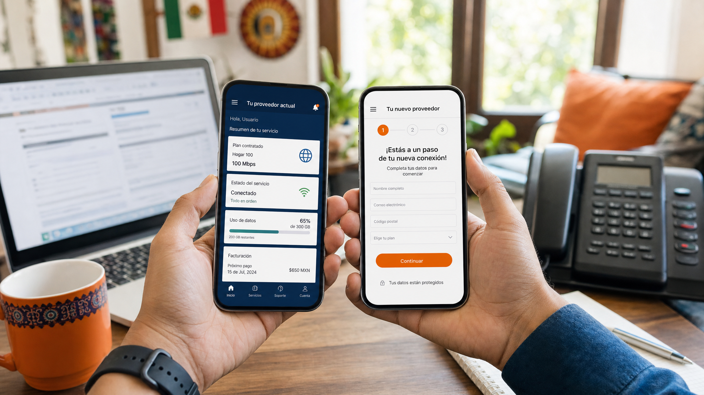

Respuesta Rápida
Tu número telefónico fijo se porta en 5-10 días hábiles sin costo y sin perder llamadas; los四大 operadores (Telmex, Izzi, Totalplay, Megacable) están obligados por ley a respetar la portabilidad numérica. Conservar el número no afecta el precio del paquete de internet.
- Costo de portabilidad: $0 por ley, no debe cobrarte nadie
- Acción: tramita la portabilidad al mismo tiempo que contratas el nuevo servicio
Para más detalle, consulta /blog/c%C3%B3mo-contratar-internet-en-m%C3%A9xico-2026/.

Cómo cambiar de proveedor de internet sin perder tu número: Guía completa para hogares en México
Si alguna vez has sentido la frustración de una conexión lenta durante una videollamada importante o un corte de señal en plena tarde de streaming, es probable que estés pensando en buscar alternativas. Sin embargo, surge una duda muy común en las familias mexicanas: ¿es posible cambiar de proveedor de internet sin perder mi número de teléfono fijo? La respuesta corta es un rotundo sí. Gracias a las regulaciones actuales en México, la transición entre compañías de telecomunicaciones es más sencilla de lo que parece, siempre y cuando sigas los pasos correctos.
En este artículo, te guiaremos a través de todo el proceso de portabilidad para servicios de banda ancha y telefonía fija, compararemos las opciones disponibles en el mercado mexicano y te daremos consejos prácticos para que tu único problema sea decidir qué tan rápido quieres tu nueva conexión.
¿Qué significa realmente cambiar de proveedor de internet sin perder tu número?
Cuando hablamos de servicios de "Triple Play" (Internet, Telefonía y TV) en México, el número de teléfono fijo es parte integral del paquete. Muchos usuarios temen que, al cancelar su contrato con un proveedor como Telmex o Izzi para mudarse a Totalplay, pierdan ese número que han tenido por décadas y que es vital para trámites bancarios, negocios locales o contacto familiar.
Este proceso se conoce técnicamente como portabilidad numérica de telefonía fija. El Instituto Federal de Telecomunicaciones (IFT) ha trabajado para que este derecho sea una realidad, permitiendo que el usuario sea el dueño de su número y no de la empresa que le presta el servicio.
La diferencia entre portabilidad móvil y fija
Es importante no confundir la portabilidad de tu celular con la de tu internet de casa. Mientras que en el celular es un proceso casi instantáneo, en el internet de hogar hay elementos adicionales como la infraestructura (fibra óptica vs. cable coaxial) y el equipo (módem/router) que deben ser gestionados cuidadosamente para que la transición sea transparente.
Guía paso a paso: Cómo realizar la portabilidad de tu número fijo con éxito
Cambiar de compañía no es simplemente dejar de pagar la factura actual. Para evitar que tu número se pierda en el limbo digital, debes seguir un orden lógico.
1. Verifica la cobertura de tu zona
Antes de cualquier movimiento, lo más importante es saber si el nuevo proveedor puede llegar a tu domicilio con tecnología de fibra óptica. No sirve de nada querer portar tu número si el nuevo proveedor solo ofrece tecnología de cobre antigua en tu colonia.
Tip pro: Pregunta a tus vecinos qué servicio utilizan y qué tal es su estabilidad.
2. Revisa tu contrato actual (La cláusula de permanencia)
Este es el punto donde muchos fallan. Antes de solicitar el cambio, revisa si tienes un contrato vigente con cláusula de permanencia. Si intentas cancelar antes de tiempo, tu proveedor actual te aplicará una penalización económica que podría ser mayor al ahorro que buscas con el nuevo servicio.
3. Contacta al NUEVO proveedor (No al viejo)
Este es el error más común. No canceles tu servicio actual todavía. El proceso de portabilidad debe ser iniciado por la compañía a la que te quieres unir. Ellos son los interesados en "atraerte" y, por lo tanto, tienen el proceso administrativo para solicitar tu número a la compañía anterior.
Al llamar al nuevo proveedor, debes decir claramente: "Deseo contratar un paquete de internet y quiero realizar la portabilidad de mi número fijo actual".
4. Proporciona la documentación necesaria
Para que la portabilidad sea exitosa, te pedirán:
- Identificación oficial (INE).
- Comprobante de domicilio reciente.
- El número telefónico exacto que deseas conservar.
- El nombre de tu proveedor actual.
5. El periodo de transición
Una vez aceptada la solicitud, habrá un periodo de "ventana" donde ambos servicios podrían presentar intermitencias o, simplemente, el servicio antiguo se cortará y el nuevo se activará. Durante este proceso, el nuevo proveedor se encarga de la configuración técnica.
Comparativa de los principales proveedores de internet en México
Para tomar una decisión informada, es necesario analizar qué ofrece cada jugador en el mercado mexicano. No todos los paquetes son iguales, y lo que te sirve a ti podría no ser lo ideal para una familia con muchos dispositivos conectados.
Proveedor Tecnología Principal Fortalezas Ideal para...
:--- :--- :--- :--- Telmex (Infinitum) Fibra Óptica / ADSL Cobertura nacional masiva y estabilidad en zonas rurales. Hogares que buscan disponibilidad en casi cualquier lugar. Totalplay Fibra Óptica Pura Velocidades muy altas y excelente streaming integrado. Gamers y hogares con alta demanda de ancho de banda. Izzi Cable Coaxial / Fibra Paquetes robustos de TV y telefonía muy integrados. Familias que consumen mucha televisión por cable. Megacable Fibra / Híbrido Buenas ofertas en paquetes de servicios múltiples. Zonas urbanas específicas con promociones agresivas.
Si estás indecista sobre cuál es la mejor opción para tu presupuesto y necesidades técnicas, te recomendamos leer nuestro análisis detallado en /blog/mejor-internet-casa-mexico-2026.html, donde desglosamos las velocidades y costos actualizados.
Errores comunes y cómo evitarlos (Lo que nadie te dice)
Cambiar de proveedor parece sencillo, pero hay "trampas" administrativas que pueden costarte dinero o dolores de cabeza.
El error de cancelar antes de tiempo
Si cancelas tu servicio actual pensando que "estás liberando el número", podricamente lo pierdas. Si el ciclo de portabilidad se interrumpe porque el número ya no está activo en ninguna red, el número queda "huérfano" y podría ser reasignado a otra persona en cuestión de días. Siempre espera a que el nuevo proveedor te confirme que la portabilidad ha sido exitada.
El problema del equipo (Módem y Decodificadores)
Cuando cambias de proveedor, el equipo actual (módem, decodificadores de TV) suele ser propiedad de la compañía anterior.
- Acción necesaria: Asegúrate de programar la devolución del equipo viejo. Si no lo haces, la compañía anterior te seguirá facturando cargos por "no devolución de equipo" durante meses.
La deuda pendiente
La portabilidad de número no borra tus deudas. Si tienes un adeudo con tu proveedor anterior, es muy probable que la solicitud de portabilidad sea rechazada por el sistema. Asegúrate de estar al corriente con tus facturas antes de iniciar el trámimo.
Checklist para una transición exitosa en tu hogar
Para que no se te escape nada, utiliza esta lista de verificación antes de hacer la llamada al nuevo proveedor:
- [ ] Verificación de Cobertura: ¿El nuevo proveedor llega con fibra óptica a mi calle?
- [ ] Auditoría de Contrato: ¿Ya terminó mi periodo de permanencia con el proveedor actual?
- [ ] Presupuesto: ¿El nuevo paquete incluye impuestos y cargos por renta de módem?
- [ ] Documentación lista: ¿Tengo mi INE y comprobante de domicilio a la mano?
- [ ] Plan de Devolución: ¿Tengo el cable, el cargador y el módem para entregarlos al proveedor viejo?
- [ ] Backup de Datos: Si usas el internet para trabajar, ¿tengo un plan de datos móviles para cubrir las horas de la transición?
Conclusión: No te conformes con un mal servicio
Cambiar de proveedor de internet sin perder tu número es un derecho que te permite buscar la mejor calidad de conexión sin sacrificar tu identidad telefónica. En un México cada vez más digitalizado, contar con una conexión estable es tan vital como tener agua o electricidad.
No permitas que el miedo a perder tu número te mantenga atado a un servicio lento o costoso. Realiza una comparación de precios, verifica tu cobertura y da el paso hacia una mejor experiencia digital.
¿Estás listo para mejorar tu conexión? Comienza hoy mismo revisando tu velocidad actual y comparándola con las nuevas ofertas de fibra óptica disponibles en tu zona. ¡Tu productividad y entretenimiento te lo agradecerán!
::: section
Comparativa rápida de proveedores
| Proveedor | Velocidad | Precio/mes | Tecnología | Mejor para |
|---|---|---|---|---|
| Totalplay | 200-1000 Mbps | $399-$1,499 | Fibra óptica | Velocidad y simetría |
| Telmex Infinitum | 20-1000 Mbps | $299-$1,099 | Fibra/Cobre | Cobertura nacional |
| Izzi | 100-1000 Mbps | $349-$999 | Coaxial | Bundle con TV |
| Megacable | 80-600 Mbps | $299-$799 | Coaxial | Precio económico |
Para comparar en detalle, consulta nuestro ranking de proveedores 2026. :::